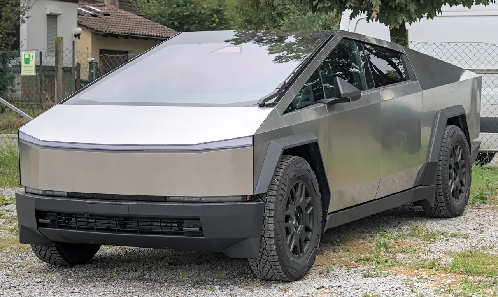
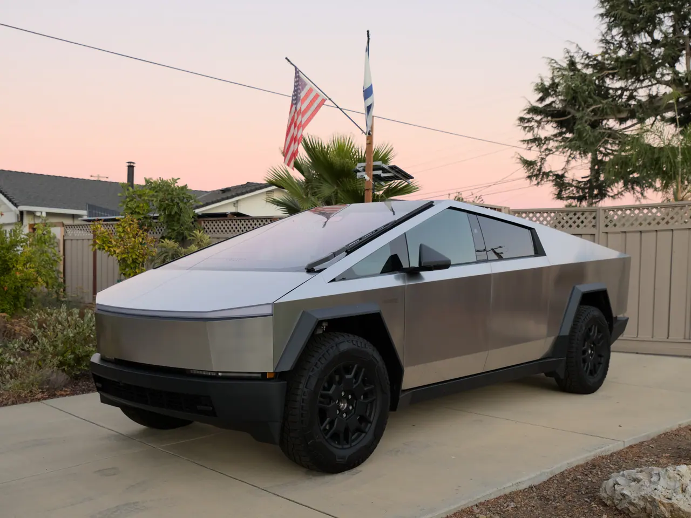
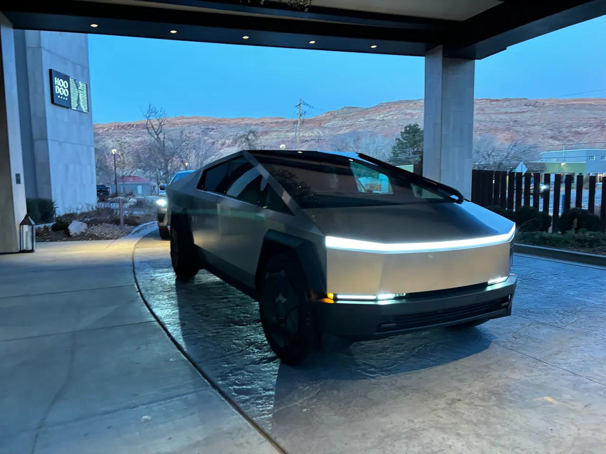

▲ 사이버트럭. 성능 변경 없이 트림당 5,000달러가 올랐다 ⓒ Wikimedia Commons
가격 인상에는 보통 명분이 붙습니다. 사양이 늘었거나, 원가가 올랐거나, 최소한 무언가는 바뀝니다.
이번 사이버트럭은 그런 설명이 없습니다. 출력도 주행거리도 편의사양도 그대로인 채로 트림당 5,000달러가 올랐습니다. 그것도 판매가 급감하는 중에 벌어진 일입니다.
1. 트림별로 얼마가 올랐나
인상은 하위 두 트림에만 적용됐습니다. 최상위 사이버비스트는 그대로입니다.
| 트림 | 이전 | 현재 | 인상폭 |
|---|---|---|---|
| 듀얼 모터 AWD | $69,990 | $74,990 | +$5,000 |
| 프리미엄 AWD | $79,990 | $84,990 | +$5,000 |
| 사이버비스트 | $99,990 | $99,990 | 동결 |
📍 원화로 환산하면
8월 하순 환율(약 1,386원/달러) 기준으로 5,000달러는 약 693만 원입니다.
기본형 기준으로 7만 4,990달러는 약 1억 400만 원, 2월의 5만 9,990달러는 약 8,320만 원이었습니다. 반년 사이 2,080만 원가량이 오른 셈입니다.

▲ 사양 변경 없이 가격만 조정됐다 ⓒ Wikimedia Commons
2. 반년 동안의 누적 인상
이번이 처음이 아닙니다. 2월 5만 9,990달러였던 기본가는 몇 차례를 거쳐 현재 7만 4,990달러가 됐습니다. 누적 1만 5,000달러, 약 2,080만 원입니다.
그동안 출력·주행거리·편의사양에서 이를 설명할 만한 변경은 없었습니다.
3. 판매는 반대로 가고 있습니다
가격 인상과 판매 흐름이 정반대입니다.
| 기간 | 판매 | 증감 |
|---|---|---|
| 2025년 | 2만 237대 | 전년 대비 -48% |
| 2026년 1분기 | 3,519대 | 전년 동기 대비 -45% |
일론 머스크가 과거 언급한 연간 25만 대 이상이라는 수요 전망과는 큰 차이가 있습니다. 2025년 실적은 그 10분의 1에도 미치지 못했습니다.

▲ 2025년 미국 판매는 2만 237대로 전년 대비 48% 줄었다 ⓒ Wikimedia Commons
4. 왜 올렸을까
수요가 줄면 가격을 내리는 것이 일반적입니다. 반대로 간 이유에 대해서는 공식 설명이 없습니다. 업계에서 거론되는 해석은 대체로 세 갈래입니다.
✅ 거론되는 배경
· 부품·관세 원가 상승분을 판매가에 반영했다는 해석
· 판매량 회복이 어렵다고 보고 대당 마진을 확보하려 한다는 해석
· 생산량을 줄이면서 희소성 쪽으로 포지션을 옮긴다는 해석
📍 셋 다 확정된 설명은 아닙니다
테슬라는 가격 조정의 이유를 별도로 공개하지 않았습니다. 위 해석은 모두 업계의 추정입니다.
다만 최상위 트림만 동결했다는 점은 참고할 만합니다. 이미 높은 가격대의 트림은 더 올릴 여지가 없다고 판단했을 가능성이 있습니다.
5. 국내와의 관계
사이버트럭은 국내에 정식 출시되지 않았습니다. 이번 인상은 미국 시장 가격이며, 국내 판매 계획도 확정된 바 없습니다.
다만 테슬라의 가격 정책은 국내 판매 모델에도 종종 같은 방식으로 적용돼 왔습니다. 사양 변경 없이 가격만 조정하는 방식 자체는 참고할 만한 신호입니다.

▲ 국내에는 정식 출시되지 않았다 ⓒ Wikimedia Commons
정리
테슬라가 사이버트럭 가격을 트림당 5,000달러(약 693만 원) 올렸습니다. 듀얼 모터 AWD는 7만 4,990달러, 프리미엄 AWD는 8만 4,990달러가 됐고 사이버비스트는 9만 9,990달러로 동결됐습니다.
2월 5만 9,990달러였던 기본가가 반년 만에 1만 5,000달러(약 2,080만 원) 올랐습니다. 그동안 출력·주행거리·편의사양 변경은 없었습니다.
판매는 반대로 갔습니다. 2025년 미국 2만 237대(-48%), 2026년 1분기 3,519대(-45%)로, 머스크가 말한 연 25만 대 전망과 큰 차이가 있습니다. 인상 이유는 공식적으로 설명되지 않았습니다.